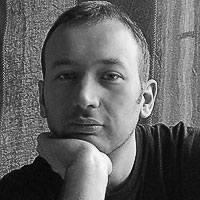 Il corso si svolge in una atmosfera amichevole e spesso gioiosa, ma senza perdere di vista gli obiettivi: imparare la lingua e la cultura russa. In sole 20 ore non si può certo diventare madrelingua, ma si hanno già le basi per imbastire una semplice conversazione e la curiosità per approfondire quello che si è imparato.
Gli insegnanti sono giovani e simpatici, l'orario è flessibile (si cerca di venire incontro alle esigenze di ognuno). In particolare sono interessanti gli incontri del sabato: tra un tè ed un biscotto si ha modo di scoprire conversando (in italiano, ma con qualche parola in russo) alcune delle particolarità della cultura russa.
Se devo trovare qualcosa da migliorare potrei citare le dispense fornite. Essendo delle fotocopie prese da diversi libri, ho avuto difficoltà a trovare un filo conduttore coerente tra i vari capitoli. Intendo dire che i vari capitoli delle dispense non sono legati tra loro in modo tale da fornire un percorso lineare. Devo comunque dire che si tratta di una problema minore e, in ogni caso, l'insegnante si è sempre dimostrata molto disponibile nel chiarire ogni nostro dubbio.
In conclusione, devo dire che è stata una esperienza molto interessante e divertente. Da consigliare a chi, per necessità o curiosità, vuole avvicinarsi alla cultura russa.
Ho iniziato il corso di russo all'associazione Portico delle Parole come principiante assoluta, e ammetto con numerosi dubbi di poter imparare anche solo qualche parola o l'alfabeto di questa lingua cosi ostica. Ma grazie ad Olga e alle sue lezioni molto coinvolgenti, divertenti e basate sull'interazione, questo ed altro è stato possibile!
Questo è il corso ideale se vuoi imparare a conoscere non solo la lingua ma anche la cultura russa, a differenza delle scuole di lingue tradizionali questa associazione culturale si pone l'obiettivo ultimo non di fare solamente imparare la lingua in modo statico e tecnico, ma di coinvolgerti facendoti imparare divertendoti anche con tante iniziative interessanti.
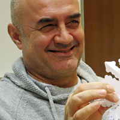 L'esperienza del corso è stata sostanzialmente positiva. Certo, non posso negare che ho avuto momenti di difficoltà nel memorizzare i termini dei vari sostantivi russi e la gestione dei casi ma, nel complesso, posso sicuramente affermare che il metodo di Olga è valido. Si scherza, si ride, ci si diverte e, sebbene nutrivo parecchi dubbi, si impara. Sì, esatto, si impara. Perciò coraggio: "chi vuole imparare la radice pana un linguaggio interessante. Non avrei mai pensato di riuscire a memorizzare quei termini così difficili, eppure, ce l'ho fatta. Quindi "очень хорошо Ольгa", ben fatto!
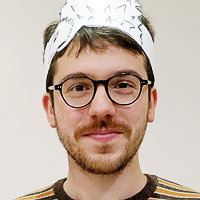 Studiare la lingua russa non è certamente una passeggiata. Ma l’associazione Portico delle Parole permette di farlo con più semplicità, divertimento e grande coinvolgimento. Sono tante le iniziative che i giovani insegnanti organizzano con grande entusiasmo: il tè il sabato, le lezioni di fonetica e serate di auguri e feste con giochi e tradizioni russe. Tutto rigorosamente in lingua, un elemento che permette di entrare ancora di più nella cultura di questo grande Paese. Olga e Yuri sono gentili e disponibili. Le loro lezioni divertenti e scorrevoli. Insomma, мне очень нравится!
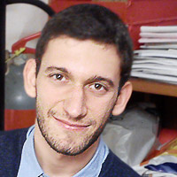 I miei primi passi nella lingua e cultura russa sono stati decisamente positivi. Il punto di forza del corso è indubbiamente la consapevolezza degli insegnanti che la lingua russa non è certo tra le più semplici, e grazie ad un percorso ben strutturato è possibile cominciare a comunicare in maniera semplice ma efficace. Inoltre non manca la disponibilità degli orari e dei giorni, la chiarezza nelle lezioni, le iniziative al di fuori del corso, quali gli incontri settimanali davanti ad una tazza di the o le lezioni extra per gli interessati. Insomma... Promosso a pieni voti!
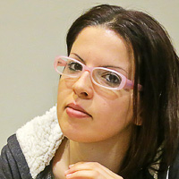 Avevo già studiato russo per conto mio, ma avevo bisogno di praticarlo e ho scoperto per caso ‘Il Portico delle parole’. In 14 ore di pratica sono migliorata molto. E’ stata un’ottima esperienza.
Olga, l’insegnante, è molto disponibile, sempre desiderosa di farci scoprire qualche curiosità sul suo Paese, sulle sue tradizioni. Risponde con entusiasmo alle nostre domande e ci incoraggia. E’ anche molto fantasiosa, inventa giochi per farci esercitare senza annoiarci e il rito del tè russo di sabato è una grande occasione per incontrare altri russi, scoprire i loro costumi e fare pratica di russo.
Sono tutti molto simpatici, disponibili e pazienti con noi, che il Russo lo mastichiamo appena. Ho trovato molto flessibili gli orari e l’organizzazione del corso e siamo riusciti ad accordarci per avere una lezione ad orari comodi a tutti. Se potessi suggerire un miglioramento, sicuramente suggerirei di trovare qualche occasione in più per fare anche pratica di russo scritto, in particolare in corsivo, ad esempio realizzando, a casa, composizioni o dedicando un po’ di tempo in classe a dettati.
Un’esperienza molto positiva, da continuare sicuramente.
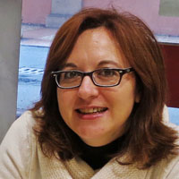 Il corso presso l'associazione Portico delle Parole mi ha permesso di intraprendere i primi passi nello studio della lingua russa. Ho incontrato persone davvero carine che hanno reso questo apprendimento scorrevole e veloce, coadiuvato anche da momenti di svago insieme come il compleanno dell'associazione, il thè al sabato e le lezioni di fonetica. Olga, Daria, Anna e Yura sono insegnanti bravissimi, simpatici e preparati, molto attenti alle esigenze di apprendimento degli studenti. Consiglio vivamente a chiunque voglia imparare la lingua e la cultura russa di iscriversi a un corso come ho fatto io. Sono sicura che non ve ne pentirete!
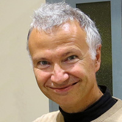 Il corso mi è piaciuto moltissimo, l’atmosfera in aula è molto piacevole e divertente e le lezioni molto belle, organizzate bene e illustrate dall’insegnante con grande chiarezza e professionalità.Ho apprezzato moltissimo anche le altre opportunità didattiche complementari alle lezioni, e le attività culturali, ovvero i workshop e gli incontri con amici russi (il Te del sabato, la festa per l’anniversario e per il compleanno, eccetera). Essi sono un grande stimolo per tuffarsi nell’avventura di imparare il russo ed anche per apprezzare sempre più la ammirevole cultura della Russia e la sua affascinante letteratura, cultura, cucina e stile di vita!
Il grande entusiasmo e la passione per l’insegnamento tuo e di Daria (e di tutti gli amici russi che ho conosciuto presso l’Associazione "Il Portico delle Parole") costituiscono un punto di forza eccezionale!
Al termine della lezione, mi viene subito voglia di andare a casa e proseguire a studiare! Non mi era mai capitato prima, neanche a scuola o all’Università (quando invece io non desideravo altro che la lezione finisse al più presto!)
Metodologia di insegnamento e orari serali per me sono quelli ideali. Non avevo mai studiato russo prima di questo corso (anche se mi piace molto imparare le lingue straniere e ho frequentato diversi corsi di altre lingue) ma ora mi sento molto motivato per proseguire l’apprendimento.
Mi prenoto pertanto fin da ora per il Secondo corso che inizierà a gennaio! Un grazie sincero per l’ottimo lavoro che avete svolto, che costituisce una bellissima realtà di apprendimento della lingua e cultura russa a Bologna!
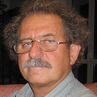 Recensione Corso di russo:
Sono un bolognese, e da molto tempo desideravo studiare la lingua russa, principalmente per turismo, ma anche per conoscere la loro grande e antica cultura: storia, teatro, cinema arte e letteratura, ecc. Avevo già imparato a leggere il cirillico durante un precedente viaggio a Sofia, e quindi ho cominciato a cercare una scuola a Bologna. Purtroppo ne ho trovata una molto cara, noiosa e dove ho imparato davvero poco, e così ho fatto il corso elementare.
Poi per fortuna ho letto la pubblicità del Portico delle Parole e mi sono iscritto subito. L'ambiente è veramente molto giocoso, istruttivo e divertente ed Olga è davvero brava! Questa estate sono riuscito a leggere 2 libri di Puskin (ma col testo a fronte): Dama di picche e Boris Godunov, e tantissimi altri autori tradotti in italiano.
Ho visto anche un lungo film-documentario di Nikita Mihalkov (Russi senza Russia). Quindi mi iscriverò sicuramente al corso successivo.
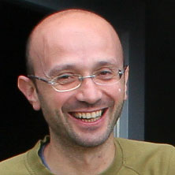 Ho iniziato a studiare russo con Olga circa 3 anni fa. Partivo da un livello molto basso (avevo studiato da solo per un po' e, oltre all'alfabeto, conoscevo solo qualche frase "prefabbricata"...). In breve tempo con Olga ho fatto notevoli progressi. Innanzitutto, il suo metodo prevede l'utilizzo del solo russo durante le lezioni. Sembra incredibile, eppure a poco a poco riuscivo a seguire la lezione senza bisogno di ricorrere all'italiano neanche per le spiegazioni. Olga predilige un approccio intuitivo, introducendo gli aspetti grammaticali in maniera graduale e diciamo così "al bisogno". Perciò le lezioni e gli esercizi, sia in classe che a casa, e per i quali usa filmati, giochi, immagini..., risultano gradevoli (direi spesso divertenti). Durante le lezioni si fa molta conversazione, sui temi più diversi (la descrizione di un viaggio, di una ricetta, il commento ad un film, ecc...). Inoltre Olga organizza diverse attività con madrelingua russi nelle quali coinvolge gli studenti.
Certo il russo rimane una lingua "difficile" e richiede impegno, motivazione e tempo. La mia strada verso la conoscenza del russo è ancora lunga. Ma grazie ad Olga adesso riesco a sostenere una conversazione con dei russi, a leggere in russo (sto leggendo il mio primo romanzo in lingua russa) e anche a scrivere dei brevi testi.
In sintesi, la mia esperienza con Olga è assolutamente positiva.
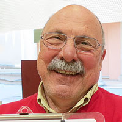 In via Nosadella nel centro storico di Bologna si può imparare il Russo in modo piacevole, rilassato ed estremamente lontano dallo stereotipo di scuola tradizionale.
Se proprio vogliamo essere precisi il "banco" c'è, ma per scrivere su qualcosa bisognerà pur appoggiarsi e c'è anche una lavagna ma le similitudini finiscono qui. Ciò che rende l'apprendimento veloce e piacevole è il gioco che consente l'interazione fra insegnante ed allievo e permette alle nozioni di essere assimilate senza alcun sforzo e di parlare Russo da subito.
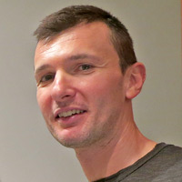L'esperienza al "portico delle parole"e'stata straordinaria,il corso si tiene in una sala pulita e ben illuminata molto centrale essendo in via Nosadella. Olga e' molto disponibile e simpatica ed ha un ottimo metodo di insegnamento,riesce in poche ore ad illuminarti una lingua che,a partire dall'alfabeto,sembra impossibile da imparare per noi italiani. Alla fine delle prime 20 ore si ha una parvenza di conoscenza della lingua che ovviamente va approfondita per riuscire a sostenere un dialogo e saper trattare ogni argomento.
Consigliato a tutti coloro interessati per qualsiasi motivo ad avvicinarsi ad una nuova lingua ed a una apertura al mondo e alla vita.
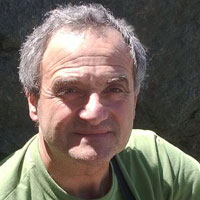 Ho cominciato a studiare la lingua russa con Olga circa 2 anni e mezzo fa. Molti anni prima, avevo iniziato a frequentare un corso, senza poter proseguire a lungo, ed ancora conservavo qualche conoscenza di almeno una parte dell'alfabeto cirillico. Oggi penso di essere forse il peggiore studente di Olga, in quanto non studio praticamente mai, ascolto soltanto qualche CD con audiocorsi di russo, e nemmeno troppo regolarmente, e frequento le lezioni con estrema irregolarità. Può capitare di fare 4 o 5 lezioni in un mese, come capita anche che passino due o tre mesi, tra una lezione e l'altra, ovviamente tutto questo per colpa mia, a causa del mio lavoro che mi concede poco tempo per partecipare alle lezioni.
Nonostante queste premesse, dopo due anni riesco a leggere quanto mi scrivono i miei amici bielorussi, e posso rispondere loro in maniera decente, sia pure, a volte, con l'aiuto di un vocabolario. Inoltre, e questo mi diverte molto, riesco a dialogare con qualche collega russo, o comunque proveniente dall'Europa orientale, dove tutti studiavano il russo a scuola fino alla caduta di quel sistema politico, avvenuta tra il 1989 ed il 1991.
Mi è anche capitato, in qualche azienda dove mi trovavo ad operare, di non riuscire a nascondere le mie sommarie conoscenze di questa che penso sia una lingua meravigliosa, di fronte a russi che pure parlavano un ottimo inglese. Bene, con mia sorpresa questi cominciavano a parlare russo con me, come se si trovassero di fronte al loro vicino di casa.... A quel punto ero felice di riuscire ad esprimere qualcosa di comprensibile, e di mettere a suo agio l'interlocutore, ma poi mi trovavo in grande difficoltà, a proseguire la conversazione usando il solo russo fluente di un madrelingua.
Nelle prime lezioni, avevo spesso la tendenza a sgarrare e, preso dalla foga della conversazione, cedevo spesso a termini e parole italiane, ma Olga, in maniera assolutamente inflessibile, riportava sempre tutto alla lingua russa, rifiutando anche la più semplice parola, o spiegazione, in italiano. Questo penso sia molto importante, per imparare una lingua, serve pensare e ragionare in quella lingua, senza scorciatoie di sorta.
Ogni tanto, nelle varie lezioni, Olga spiega anche le strutture grammaticali della lingua che insegna, ad uso e consumo degli argomenti che si stanno trattando in quel momento. Se io fossi un normale e diligente studente che si applica a casa, anche soltanto i dieci o quindici minuti suggeriti da Olga, però quotidiani, potrei forse ora confrontarmi veramente con russi madrelingua. Invece, il mio impegno è relativo solamente agli incontri sul campo di cui scrivevo prima, e però tutti pienamente soddisfacenti, devo dire.
Con l'aiuto di Olga, ho scoperto molte canzoni o filmati in rete, dove si possono seguire le pronunce corrette dei vari testi incontrati, assimilando in questo modo anche alcune strutture della lingua. Oggi, a volte mi succede di "pensare" in russo anche in contesti del tutto estranei allo studio di questa lingua. Come sostituire infatti, con altre espressioni, anche italiane, l'efficacia di un "eto ploxo!", questo male!, quando qualcosa va storto, nella vita di ogni giorno?
E poi, insomma, non si potrà mai saperne abbastanza, del popolo che abita il più vasto Paese del mondo, nella cui lingua si usa lo stesso termine, MIR, per indicare, appunto, il mondo intero, e la parola pace. Come dire, il mondo esiste, si può pensare, immaginare, soltanto in pace, e cosa meglio può garantire la pace, se non la conoscenza reciproca, a partire ovviamente dalla lingua?